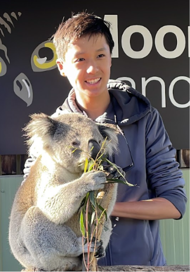
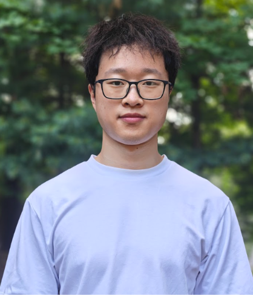
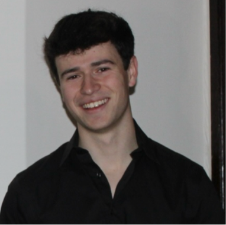
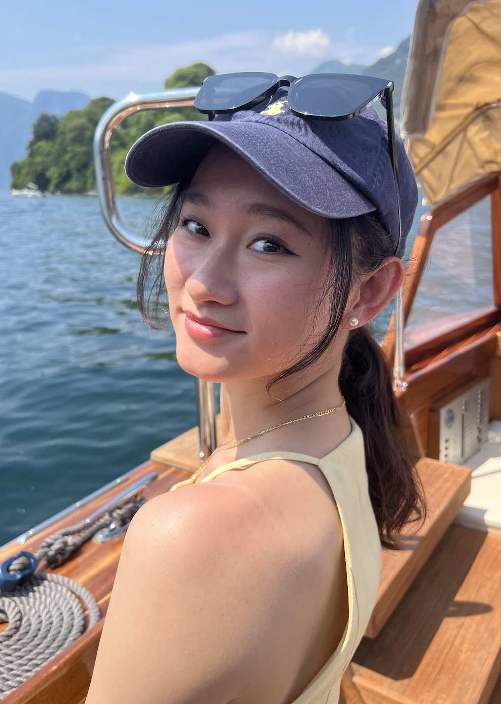

Senior & Alumni Advice Panel 2026
About The Panel
In this panel, graduated high school seniors and college-age alumni of the Youth STEAM Initiative came together over Zoom to share their high school experiences, their college journeys so far, and the advice they wish they'd had along the way. The panel covered everything from choosing extracurriculars and avoiding burnout to navigating college applications and figuring out a path in college itself. Watch the full recording above, or read the summarized highlights below.
About Our Panelists

Yuanheng Mao
Hi, I'm Yuanheng. I graduated from Belmont High School this
past June and am heading to Harvard in the fall. In high
school I was heavily involved in student government. I served
as co-president of the student senate and as an advisor on a
school committee. I also did AI and healthcare research,
including an internship at the MIT Jameel Clinic for AI and
Health.
Lillian Yang
Hi, I'm Lillian. I just graduated from Lexington High School
and am headed to UCLA this fall, where I'll study neuroscience
on the pre-medical track. In high school I competed in
Lincoln-Douglas debate for three years (becoming varsity
captain and a teaching assistant in my fourth), served as
treasurer of class council, and did research with Mass General
Hospital and Columbia Medical Center.

Jerry Xu
Hi, I'm Jerry. I just graduated from Lexington High School and am heading to MIT to study mathematics, computer science, and molecular biology. In high school I focused heavily on STEM competitions; math and biology olympiads; and was a four-year member (and senior-year captain) of the LHS math team and science bowl club, alongside independent and MIT PRIMES research.
Audi Lin
Hi, I'm Audi. I graduated from Lexington High School in 2023 and I'm now a computer science major with a robotics minor at Carnegie Mellon University. In high school I competitively swam and was on the robotics team, and I also managed the LHS school store; in college I still swim and do robotics on the side, though most of my time now goes to coursework and TAing.

Baoren Liu
Hi, I'm Baoren. I'm currently studying math and computer science at UIUC, after starting my freshman year at Northeastern University. In high school I played on the freshman soccer team, played in the LHS wind ensemble, and built a scheduling web app that ended up with thousands of users; in college I've focused on independent projects and research.

Eli Olcott
Hi, I'm Eli. I graduated from Lexington High School in 2023 and went to Harvard to study computer science and philosophy. In high school I competitively played soccer and built and coded a number of apps; in college I took 18 months off to join an AI startup, Sapien, as its first hire, before returning to Harvard to finish my degree.

Isabel Li
Hi, I'm Isabel. I also graduated from Lexington High School in 2023 and am now at Harvard, majoring in regenerative biology and history of medicine. In high school I was an avid ballet dancer, and in college I've continued dancing, worked as an EMT, and done both biology and social science research.

Irene Gao
Hi, I'm Irene. I graduated from the Noble and Greenough School in Dedham, MA, and I'm currently an incoming junior at Columbia University studying electrical engineering. In high school I focused mostly on CS, including building websites through the Youth STEAM Initiative; in college I've combined engineering with finance, including an EE internship at Columbia's plasma physics lab and an upcoming investment banking role. [hide]
Panel Prompts: Section 1, High School Experiences
1. How did you determine which activities you wanted to pursue in high school?
Yuanheng: I got into student government by running for class
president as a freshman, then moved into broader roles like
school committee advisor and school council because I liked
shaping policy at the whole-school level. On the tech side,
joining the CS club and the Youth STEAM Initiative eventually
led me to an MIT summer program that turned into an internship
in AI and healthcare research.
Lillian: I came into high school planning to try a lot of
things and narrow down over time. Debate ended up sticking
because it helped me build confidence speaking in competitive
settings, and class council let me indulge my love of planning
events. Once I decided I wanted to go pre-med, I sought out
hospital volunteering and research to explore that path.
Jerry: Like Lillian, I started out trying a lot of things
before dropping the ones that weren't the best use of my time.
My advice is to use freshman year to explore without worrying
about results, then start narrowing down in sophomore and
junior year; for me that meant doubling down on STEM
competitions and research, even though I started research
relatively late.
Audi: My freshman year looked like a lot of clubs and general
exploration, but COVID limited things and I mostly did
tutoring. Once we were back in person, I found myself spending
hours every day on my robotics team and realized that was what
made me happiest; which ultimately led me to study CS and
robotics in college.
Baoren: I looked for activities that genuinely interested me,
had real impact, and helped me explore; soccer and tennis
because I enjoyed them, and the CS club to connect with others
in the field. A scheduling web app I built the summer before
high school (which ended up with thousands of users) is what
really got me hooked on studying CS, and band gave me a way to
decompress.
Eli Olcott: I wasn't especially strategic about it; I leaned
into the few things I genuinely enjoyed and could see myself
getting good at, like coding and soccer, which I had a natural
pull toward. A lot of my opportunities came from cold-emailing
people, which taught me that most researchers and
professionals are happy to help curious younger people.
Isabel: My dad actually sat me down in middle school and told
me I was overcommitted, so I had to pick things I was
passionate about, could grow in, and was good at; that became
dance, which took up most of my high school time. When COVID
slowed things down, I used the time to start small
self-directed projects, like a baking business with a friend
and volunteering at a senior center.
2. How did you take initiative? (friends, opportunities, etc.)
Yuanheng: For me it came down to deciding whether something
was worth my time, then going all in once I'd decided; that's
how I ended up staying in student government. Just as
important was recognizing what wasn't worth continuing, like
Model UN, which I dropped after freshman year even though I
enjoyed it.
Lillian: My philosophy became "closed mouths don't get fed."
Apply to more things than feels comfortable, and ask people
for help and resources rather than trying to figure everything
out alone. For hospital volunteering, I applied to eight or
ten places knowing only one or two would accept me, and that
same approach helped with getting essay feedback on my college
apps.
Jerry: I think your success in an activity depends on both
effort and how many opportunities you expose that effort to.
If you've worked hard on something, put it in front of as many
people as possible instead of just one. I'd also recommend
talking to older students about the paths they took, since
established pathways tend to work for a reason.
Audi: I've found that most people are happy to help if you
show genuine interest in what they're doing; that's basically
how I ended up running the LHS school store, starting from
just emailing about an assistant manager flyer and eventually
taking over when the seniors running it graduated.
Baoren: Getting yourself out there early; especially at the
start of the school year, when people are most open to making
new friends; pays off in relationships you can lean on later.
I've used those connections, including with grad students and
people working at places like Apple and TikTok, to ask how
they approached their own paths.
Eli Olcott: A lot of it was deciding "this seems cool, what
would it take to make it happen" and then just doing it,
rather than waiting for permission; that's been especially
useful now that I've done startups, where everything is
essentially made up and you have to figure it out yourself.
The one caution I'd add is to follow up and respect people's
time once they've helped you.
Isabel: I was a pretty shy kid, so initiative didn't come
naturally; what changed it was pure repetition. Getting
rejected or ignored enough times taught me that it's not
actually a big deal, and that people generally don't remember
your failures the way you do.
Irene: For me it's been about staying curious about how things
work behind the scenes, and being willing to learn whatever
sub-skills a project requires rather than sticking to only
what I already know. That curiosity is also what led me to
explore electrical engineering in college even though I came
in expecting to stay purely in CS.
Panel Prompts: Section 2, General Q&A
3. How important is research for college applications?
Jerry: Research can show up almost anywhere in your
application; as an activity, an essay topic, or a source for a
strong recommendation letter from someone who's seen you work
through difficult, extended problems, which is different from
what a classroom teacher sees. How central you make it depends
on how central it actually was to your story; if it's
something you're truly passionate about, it's worth writing
essays about, but if it was more of a side project, it's fine
to just list it as an activity.
4. How did you balance taking initiative and your own time?
Yuanheng: Work that I did with friends; like organizing our
school's cultural food fair; didn't really feel like work, so
that balanced itself out naturally. For more tedious tasks
like studying, I used a rhythm of about 30-45 minutes of
focused work followed by a 15-minute break, which kept me
consistent without burning out on long, unfocused stretches.
5. How did you make your extracurricular activities relate to each other and form a story?
Audi: I don't think you can force a "story" out of activities
you only did because you thought they'd look good; it's much
easier to build a narrative when you reflect on why you
actually chose the things you did. Do the things that make you
happy, and the story tends to follow.
6. How hard did you work in high school?
Eli Olcott: Honestly, hard; I don't think anyone gets to the
top of something without putting in real work. My junior and
senior year soccer schedule was brutal (library after school,
then a 90-minute drive to practice, then homework late into
the night), but I generally enjoyed the process, even on the
days I fell behind from exhaustion.
Audi: In college, with a lot more freedom over your schedule,
it's really on you to figure out the balance between sleep,
fun, and work; I actually found high school harder in some
ways, since so much of freshman year of college was just
learning how to study and figuring out what kind of student I
wanted to be.
Eli Olcott: Having since worked long hours at a startup, I've
noticed my relationship to "hard work" shifts by season of
life; I'm taking school easier now than I did before the
startup, because I'd rather spend that time with people. High
school for me was a season where grinding made sense, but that
doesn't mean it always will.
7. Did you burn out a lot in high school?
Yuanheng: The closest I came to burnout was the two weeks
before the regular-decision deadline, when I'd underestimated
how many supplemental essays I'd have to write and ended up
working almost the entire day, including through most of
December break. What helped afterward was consciously taking
time to rest and planning more thoroughly so I wouldn't repeat
the same crunch.
Lillian: I'd recommend time-blocking your day; set hours for
work, then genuinely set it aside in the evening for family,
friends, or being outside. I also hit burnout around the end
of junior year, and talking to friends who were feeling the
same way, rather than isolating, made a real difference.
Panel Prompts: Section 3, Advice From Recent Grads
8. Looking back, what's something you did well?
Yuanheng: I'm glad I was able to recognize early on which
activities, like Model UN and debate, weren't worth the time
sink for me, which freed up space for things like coding
projects, running an annual hackathon, and my student
government work.
Lillian: Building a strong relationship with my counselor and
other staff was something I did well, even though I wish I'd
started earlier than the end of junior year. Beyond the
practical benefit of a stronger recommendation letter, having
people at school who genuinely knew me made high school's
stress much easier to manage.
Jerry: A lot of what I did in my first two or three years
didn't feel especially productive in the moment, but by senior
year I could see how it had all tied together. My advice is to
give yourself time to try things without needing early proof
that they're "working"; most of the time it pays off, and even
when it doesn't, you still take something valuable from the
experience.
9. What's something you would change or do differently?
Yuanheng: I'd have worried less about squeezing an A+ out of
an A through extra credit; looking back, the difference
between a 4.28 and a 4.24 GPA wasn't worth the hours I put
into it, and that time could have gone elsewhere.
Lillian: I was a big procrastinator and paid for it, including
writing college essays on Christmas Eve instead of enjoying a
family ski trip; build strong organizational habits early. I'd
also tell myself not to take rejection so personally, since
the people reviewing your application don't actually know you,
and that most people are too focused on themselves to be
judging you as harshly as you imagine.
Jerry: Don't copy the people around you just to seem more
successful; colleges are explicitly looking for a diverse
class of students with their own values and interests, not
another version of someone who's already gotten in. It's
easier in the long run to start early doing things that
genuinely matter to you rather than chasing an already-proven
pathway.
Irene: Building on Jerry's point; if your only goal is getting
into a specific college, you'll get there and then still have
to figure out what to do with your life. I'd flip it: follow
what you're genuinely passionate about and let college be a
byproduct, since trying to copy someone else's exact path
doesn't guarantee you'll get their result.
10. What's one piece of advice you have?
Yuanheng: Protect some real time for yourself; I tried to keep
at least one day a week where I could just rest, alongside
decent time management so I wasn't constantly thinking about
what I still had to do.
Lillian: Do things that scare you a little, because they build
a real sense of confidence; I ran a half-marathon senior year
having never run more than a 10K, and later used that as a
mental reference point when college essays felt overwhelming.
Being encouraged by my class council advisor to give my
graduation speech, despite how nerve-wracking that was, taught
me I could handle high-pressure moments.
Jerry: Use school hours as efficiently as possible; if you
have free blocks, finish homework there instead of scrolling
on your phone, so you can actually be done when you get home.
I found I worked much better overall once I stopped letting
assignments pile up, though this depends a lot on your school
and teachers, so it's not a one-size-fits-all rule.
Panel Prompts: Section 4, Recent Grads Q&A
11. How did you guys avoid sophomore slump?
Lillian: Fair warning; I think junior year is actually harder
than sophomore year. The same time-management habits that help
with sophomore slump apply there too.
Yuanheng: Sophomore year is when I'd say grades become the
real priority; freshman year has more room for error. Once
your grades are in a good place, that's the time to start
exploring extracurriculars, though you shouldn't feel pressure
yet to pick things specifically "for college apps."
12. When and how should you build a relationship with your counselor?
Jerry: Treat your counselor like someone worth really getting
to know; talk to them about school and non-school things,
because they need to understand your character to write a
strong recommendation letter. Given how many students each
counselor has, the ones who talk to them regularly are the
ones who end up being remembered.
Lillian: I'd recommend meeting your counselor one-on-one
outside the time the school schedules; just email them, and
use a free block or study hall. Beyond letters of
recommendation, having a counselor who genuinely knows you
gives you a real support system when things get overwhelming.
Panel Prompts: Section 5, College Experiences
13. College experience so far, how did you end up where you are now?
Audi: I started college doing things similar to high school:
ultimate frisbee, club swimming; before ending up spending a
lot of time TAing (about 15 hours a week) because I discovered
I really enjoyed both the CS course and teaching itself. My
internship search took real prep, but I got there by trying a
lot of different things and staying ready for whatever came
up.
Baoren: I applied to around 20-30 colleges and got
rejected by my top choices, which is why having safety schools
mattered. I started at Northeastern, transferred to UIUC, and
after a few months of coasting, reconnected with friends who
were networking and doing research; reaching out to CS
professors with my own project ideas, rather than just asking
to help with theirs, is what got me into research.
Eli Olcott: I spent freshman year exploring clubs before
taking a year and a half off from Harvard to join a friend's
AI startup, Sapien, as the founding engineer; I built search
and product infrastructure, then led go-to-market and customer
deployment teams working with companies from mid-market up to
the Fortune 500. I came back to finish my CS and philosophy
degree because I wanted the startup experience itself, and
I've leaned more into philosophy and writing classes since
returning.
Isabel: I came in unsure whether medicine was truly my
interest or just familiar, so I spent freshman year exploring
broadly until an interdisciplinary math/CS/physics/biology
class pointed me toward biology, and a history-of-medicine
class became my second major. My summers moved from research
to anthropological fieldwork abroad to my undergrad thesis,
while dance, volunteering, and becoming an EMT rounded out
what made campus life fulfilling.
Irene: My first semester at Columbia, I joined clubs early on
both the finance and engineering sides; a race-car club and a
rocket-building Space Initiative club; and met people in both
worlds, which led me to pursue engineering and finance in
parallel even though I came in expecting to stay in CS. This
past summer I worked in a lab building power systems for
fusion research, and next summer I'll be doing investment
banking.
Audi: I spent a lot of high school worried about what other
people were doing, which I now see as wasted energy. What
actually stuck with me were the people I met and the
experience of investing real time into something I cared
about, like robotics; that sense of knowing who I am and what
I like to do has carried into college.
Baoren: The Youth STEAM Initiative mattered a lot for my
application because it demonstrated volunteering, leadership,
and CS skills all at once, along with a freelance website I
built for my tennis coach. Honestly, I don't think anything I
did "didn't matter"; even less central activities like
tutoring ended up being somewhat useful.
Eli Olcott: I don't think it was any single activity; it was
the combination of experiences that built the work ethic and
soft skills I rely on now. My rule of thumb is "do less but
better": narrow down to two or three things you actually care
about instead of spreading yourself thin chasing marginal GPA
gains.
Isabel: I wouldn't tie any one skill to a specific activity.
The biggest thing college requires is the confidence to learn
things you don't already know, and that's something you build
generally, not through any one "correct" high school activity.
Irene: Nothing I did felt like a waste, even the things that
turned out less relevant to my current path; I spent a lot of
high school time playing keyboard in bands, which had nothing
to do with my major, and I still don't regret a minute of it.
If something is meaningful to you, it's worth doing regardless
of whether it "matters" for an application.
Panel Prompts: Section 6, Final Q&A
Yuanheng: There will always be some weakness in your
application, and often it's too late to change it by the time
you're applying; so the better strategy is to make everything
else as strong as possible rather than chasing an impossible,
flawless application.
16. Can you tell us more about Eli's startup experience?
Eli Olcott: I joined Sapien after two friends from high
school, who'd both done AI research, started it around the
idea that companies sit on huge amounts of financial and
operational data they can't easily analyze; we built ways to
plug AI systems into that data so companies could get answers
in minutes instead of months. A lot of the early growth was
iterative: talking to people, finding new pain points as we
moved into new industries, and letting trust with one customer
lead to referrals and the next.
Resources & Links
Watch the full panel recording on YouTube
Read the full panel transcript